`stat_bin()` using `bins = 30`. Pick better value with `binwidth`.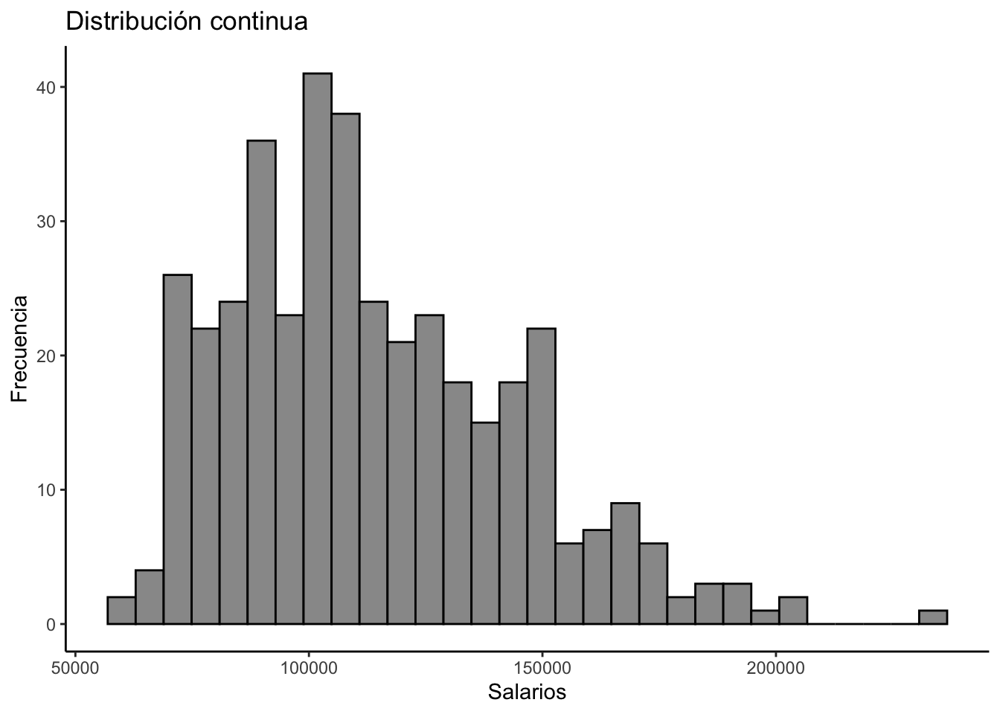
Sesión del jueves, 1 de junio de 2023
El objetivo de esta guía práctica es aplicar los conocimientos aprendidos en clases sobre la forma de una distribución en R, comprendiendo sus usos, relevancia y formas de analizarla.
En detalle, aprenderemos:
La noción de una distribución y sus tipos (continuas y discretas)
Estimar e interpretar la asimetría y curtosis de una distribución
Contrastar distribuciones empíricas con teóricas
En esta práctica trabajeremos con los datos procesados que obtuvimos en la práctica anterior, en la cual trabajamos sobre la Encuesta de Opinión Pública (CEP) de Diciembre del 2019 realizada por el Centro de Estudios Públicos.
En estadística, una distribución se refiere al conjunto de todos los valores posibles de una variable y las frecuencias (o probabilidades) con las que se producen. Generalmente, tendemos a concebir una distribución a partir del ordenamiento de dichas categorías de respuesta y su frecuencia de ocurrencia.
Es una función que muestra la frecuencia con la que se da cada valor o rango de valores en un conjunto de datos. Esto implica que, por función, nos referimos a que la magnitud de una variable depende de otra. Con ello, nacen dos conceptos:
el dominio, que se refiere a todos los posibles valores para los que la función está definida, y
el recorrido, que se refire a los valores que efectivamente toma una variable en una función F(x)
¿Y para que me sirve conocer la distribución de una variable?
Al comprender la distribución de una variable, podemos entender mejor las tendencias centrales (como la media o la mediana), la variabilidad (como el rango o la desviación estándar) y la probabilidad de diferentes resultados o sucesos.
Además, cuando una distribución empírica se asemeja a una teórica, podemos aplicarle las propiedades de esta última y realizar inferencias y pruebas de hipótesis.
Existen dos tipos de distribuciones según el nivel de medición de las variables: las continuas y las discretas.
Como cabe esperar, las distribuciones continuas aplican a variables numericas (intervalares y de razón). Es una distribución que describe la probabilidad o frecuencia de que una variable continua tome un valor particular dado un intervalo o un rango. Toma valores a lo largo de un continuo de dominio (\(R\)), es decir, su dominio son todos los números reales.
`stat_bin()` using `bins = 30`. Pick better value with `binwidth`.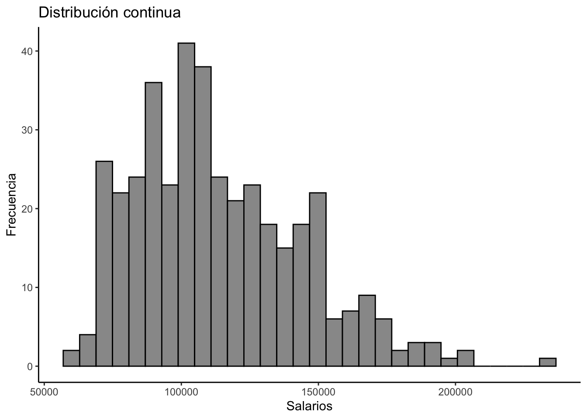
Por su parte, las distribuciones discretas son comunmente utilizadas con variables categóricas (nominales y ordinales). Son distribuciones en las que una variable sólo puede tomar un número contable de valores distintos. En otras palabras, es una distribución en la que la variable sólo puede tomar valores específicos, en lugar de cualquier valor dentro de un intervalo. Su dominio es un conjunto de valores enteros (\(N, Z, Q\)).
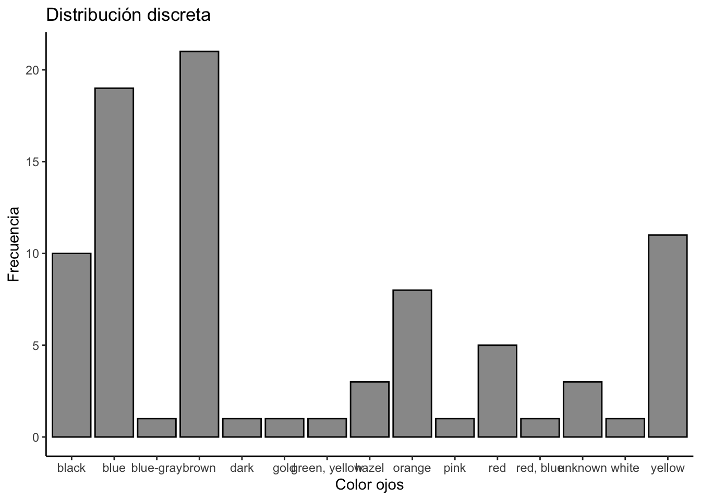
La asimetría es la medida en que la distribución de una variable se aleja de una distribución simétrica a ambos lados de su punto central. ¿Qué tan simétrica es la distribución de mis datos en ambos lados de sus colas respecto al centro?
Por su parte, la curtosis es la medida del grado de agrupamiento de los datos de una distribución. ¿Qué tan agrupados están mis datos en la distribución?
Ambas son útiles para conocer de mejor manera la distribución de nuestros datos, además de que nos permiten conocer bajo qué supuestos podemos realizar analisis más complejos (próximos cursos de la carrera).
Para ver un ejemplo aplicado, ocuparemos los datos del práctico anterior.
Cargamos las librerías y datos que ocuparemos
pacman::p_load(tidyverse,
psych,
sjmisc)
options(scipen = 999)
rm(list = ls())
proc_cep <- readRDS("Output/proc_cep.RData")Analicemos e interpretemos la forma de la distribución de nuestras variables. En este ejemplo tenemos:
psych::describe(proc_cep$edad) vars n mean sd median trimmed mad min max range skew kurtosis se
X1 1 1474 48.43 17.84 48.5 48.01 21.5 18 99 81 0.14 -0.93 0.46ggplot(data = proc_cep,
mapping = aes(x = edad)) +
geom_density(color = "black", fill = "#FA8072", alpha = 0.8) +
labs(title ="Diagrama densidad: Edad",
x = "Edad",
y = "Frecuencia",
caption = "Fuente: Elaboración propia en base a Encuesta CEP Diciembre 2019.") 
A partir de los estadísticos entregados, sabemos que la variable edad tiene una asimetría positiva (skew = 0.14) pero baja (< 0.5), lo cual indica que los datos se tienden a distribuir hacía los menores valores del eje X. Por su parte, la curtosis es negativa (kurtosis = -0.93) o platicúrtica, lo cual indica que existe una baja concentración en el centro de los datos.
psych::describe(proc_cep$satisfaccion) vars n mean sd median trimmed mad min max range skew kurtosis se
X1 1 1474 6.87 2.18 7 6.97 2.97 1 10 9 -0.32 -0.45 0.06ggplot(data = proc_cep,
mapping = aes(x = satisfaccion)) +
geom_density(color = "black", fill = "darkred", alpha = 0.8) +
labs(title ="Histograma densidad: Satisfaccion",
x = "Satisfaccion",
y = "Frecuencia",
caption = "Fuente: Elaboración propia en base a Encuesta CEP Diciembre 2019.") 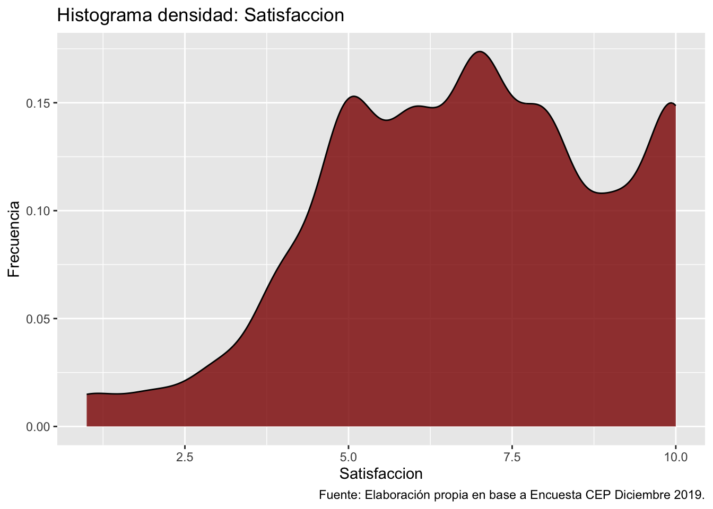
En cuanto a la variable satisfaccion, tenemos una asimetría negativa (skew = -0.32) aunque baja, indicando que los datos se tienden a distribuir hacia la parte superior de la variable. Además, la curtosis también es negativa o platicúrtica (kurtosis = -0.45), por lo que existe una baja concentración en el centro de los datos.
Como vimos en clases, una distribución empírica (u observada) es la distribución de los valores que asume la variable en un grupo concreto a partir de una observación.
Mientras que, por su parte, una distribución teórica es función matématica que expresan la distribución de un conjunto de números mediante su probabilidad de ocurencia. En palabras sencillas, es una función de densidad que permite asignar probabilidades de ocurrencia a los resultados.
Variable aleatoria
En las distribuciones teóricas, a veces nos vamos a encontrar con el concepto de variable aleatoria. ¿Qué es? En probabilidad y estadística, una variable aleatoria es una variable cuyos valores posibles son resultados numéricos de un fenómeno aleatorio.
Cuando una distribución empírica se asejema a una teórica, podemos aplicarle a la primera las propiedades de la última. Así, nos permiten hacer inferencia estadística y conocer una serie de características de la población.
Una de las distribuciones teóricas más utilizada es la normal o Gaussiana, la cual es una herramienta potente y ampliamente utilizada en estadística y probabilidad, debido a sus numerosas propiedades útiles y a sus aplicaciones prácticas en un gran número de campos y contextos.
Contrastemos ahora la distribución empírica de nuestras variables con la distribución normal
ggplot(proc_cep, aes(edad)) +
geom_histogram(aes(x = edad, y = ..density..), bins = 50, color = "black", fill = "grey") +
geom_density(color = "blue")Warning: The dot-dot notation (`..density..`) was deprecated in ggplot2 3.4.0.
ℹ Please use `after_stat(density)` instead.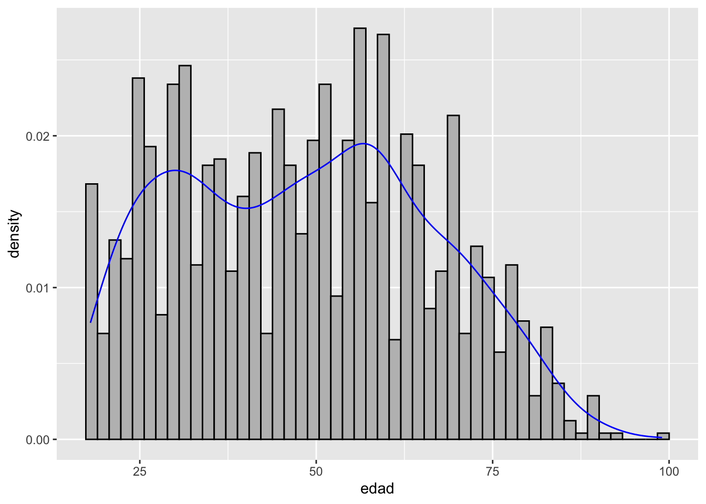
ggplot(proc_cep, aes(edad)) +
geom_histogram(aes(x = edad, y = ..density..), bins = 50, color = "black", fill = "grey") +
geom_density(color = "blue")+
stat_function(fun = dnorm, args = list(mean = mean(proc_cep$edad), sd = sd(proc_cep$edad)))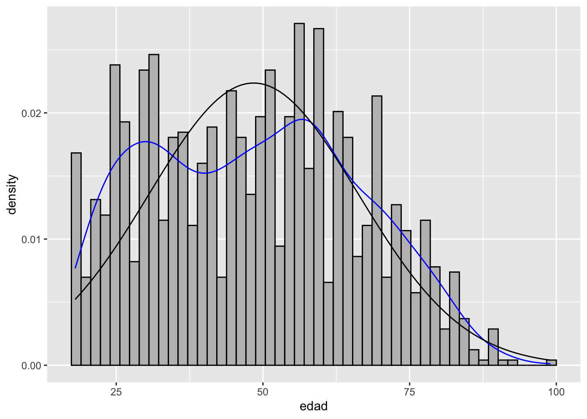
En la primera figura vemos la distribución empírica de la variable edad (histograma y densidad). En la segunda, agregamos la curva normal (o distribución), y obtenemos una evaluación gráfica de qué tan bien nuestros datos se ajustan a esta distribución teórica.
Hagamos lo mismo con la variable satisfaccion
ggplot(proc_cep, aes(satisfaccion)) +
geom_histogram(aes(x = satisfaccion, y = ..density..), color = "black", fill = "grey") +
scale_x_continuous(limits = c(0,15)) +
geom_density(color = "blue")+
stat_function(fun = dnorm, args = list(mean = mean(proc_cep$satisfaccion), sd = sd(proc_cep$satisfaccion)))`stat_bin()` using `bins = 30`. Pick better value with `binwidth`.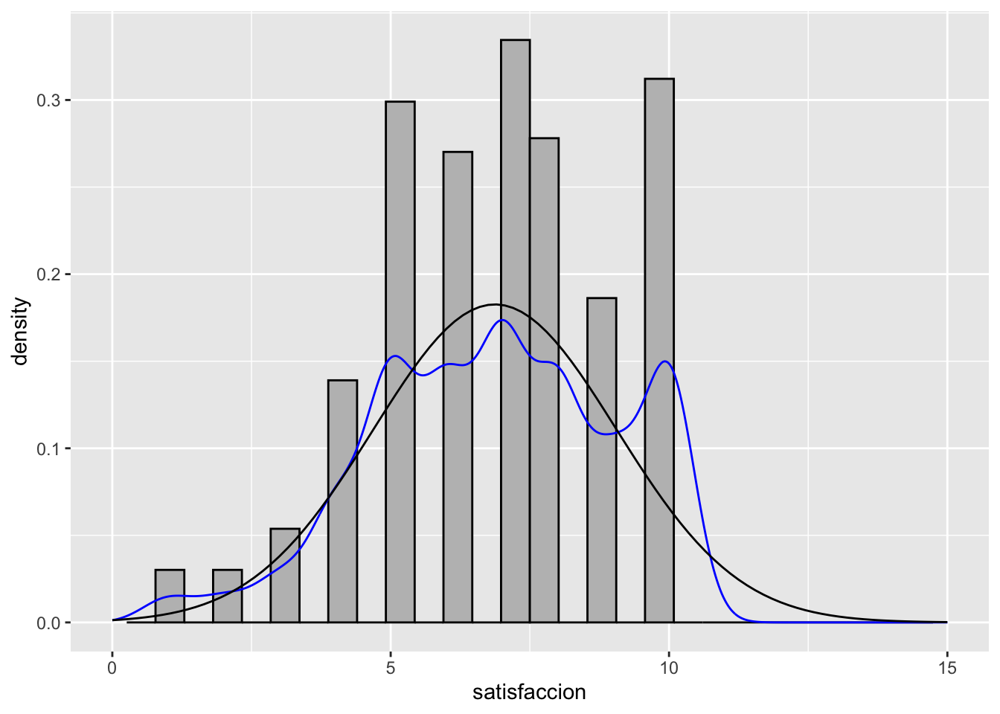
Una mejor manera de ver si nuestros datos o distribución empírica se ajustan a una distribución normal, es mediante los Q-Q plots.
ggplot(proc_cep, aes(sample = edad)) +
stat_qq() +
stat_qq_line(color = "blue")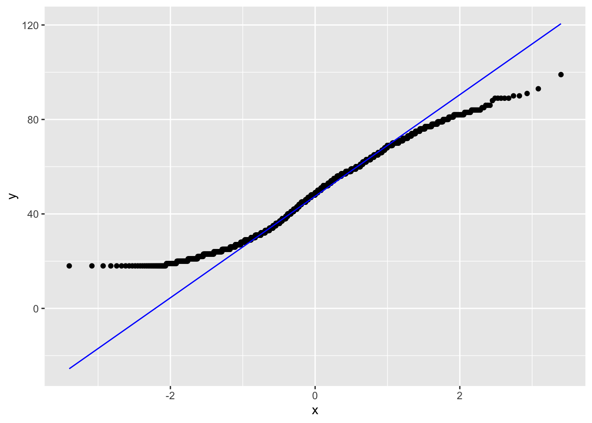
ggplot(proc_cep, aes(sample = satisfaccion)) +
stat_qq() +
stat_qq_line(color = "blue")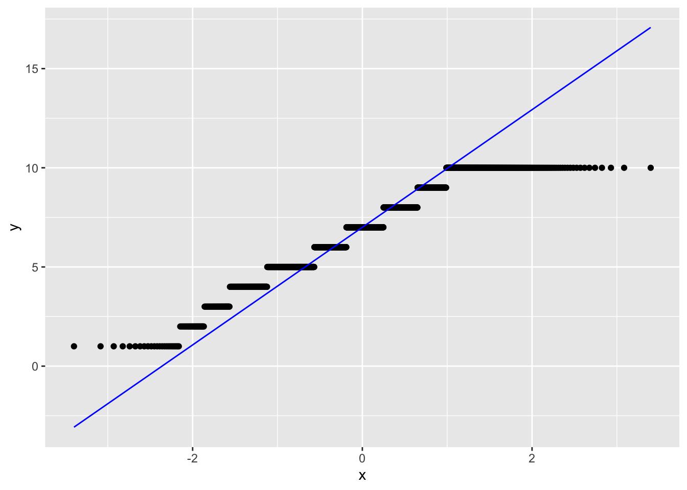
La idea es que ajuste la curva teorica (la recta) con la mayor cantidad de puntos (la variable observada). Nos permite ver donde ajusta y donde no ajusta.
Una última distribución corresponde a la distribución muestral o de muestreo. Esta se define como la distribución de una estimación (ej. promedio de IQ) en base a todas las posibles muestras que podemos obtener de la población. En otras palabras, es la distribución teórica (generadas a partir de una función matemática) que tendrá un estadístico en infinitas muestras seleccionadas al azar de una población.
Por ejemplo, si en cada una de esas muestras calculamos \(\overline{X}\), podremos comprobar que no siempre toma el mismo valor, sino que varía de una muestra a otra. Estos posibles valores del estadístico \(\overline{X}\) constituyen su distribución muestral
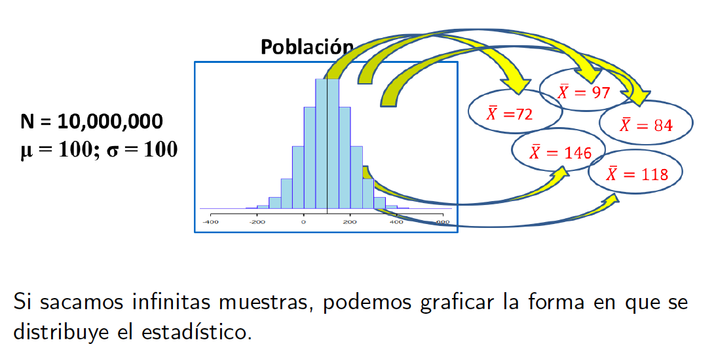
Veamos un ejemplo simulado con los puntajes PSU. Primero, creemos una base de datos ficticia para una distribución muestral indicando la cantidad de muestras (en este caso 300.000), y el promedio y desviación estándar que tendrá.
psu1 <- rnorm(n = 300000, mean = 500, sd = 110)
psych::describe(psu1) vars n mean sd median trimmed mad min max range skew
X1 1 300000 499.71 109.93 499.75 499.85 109.8 -25.17 993.36 1018.53 -0.01
kurtosis se
X1 0 0.2Ahora, grafiquemos esta distribución y veamos qué tanto ajusta con la distribución normal.
ggplot(data.frame(psu1), aes(x = psu1)) +
geom_histogram(color = "black", fill = "#FA8072") +
ggtitle("Puntaje PSU - 300.000 observaciones")`stat_bin()` using `bins = 30`. Pick better value with `binwidth`.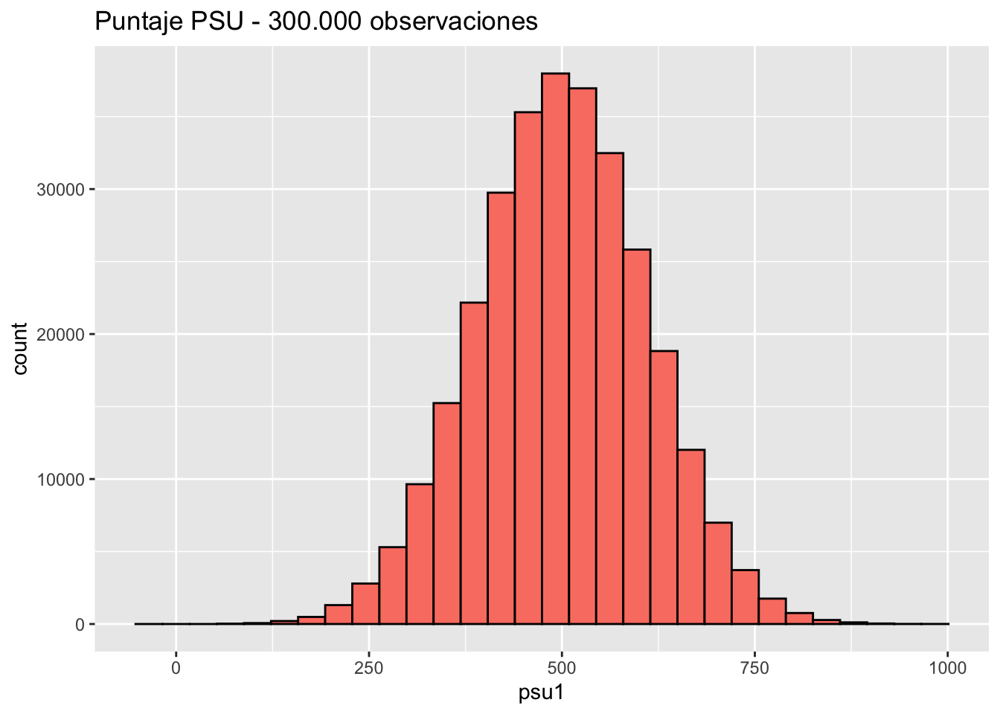
ggplot(data.frame(psu1), aes(psu1)) +
geom_histogram(aes(x = psu1, y = ..density..), bins = 50, color = "black", fill = "grey") +
stat_function(fun = dnorm, args = list(mean = mean(psu1), sd = sd(psu1)), color = "red")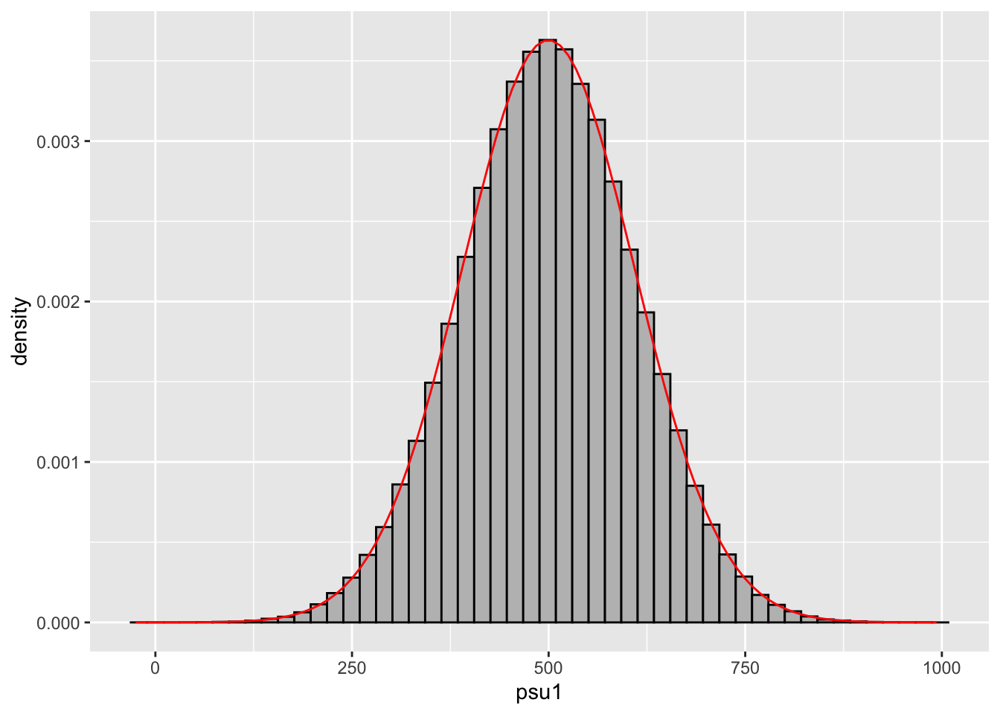
Como vemos, dado que obtuvimos esta distribución de puntajes PSU mediante un muestreo aleatorio y repetido, es decir, que sacamos el puntaje PSU promedio de N muestras, tenemos una distribución empiríca que se ajusta a una distribución normal.
Hoy aprendimos a visualizar datos en R. En detalle, vimos:
La noción de una distribución y sus tipos (continuas y discretas)
Estimar e interpretar la asimetría y curtosis de una distribución
Contrastar distribuciones empíricas con teóricas